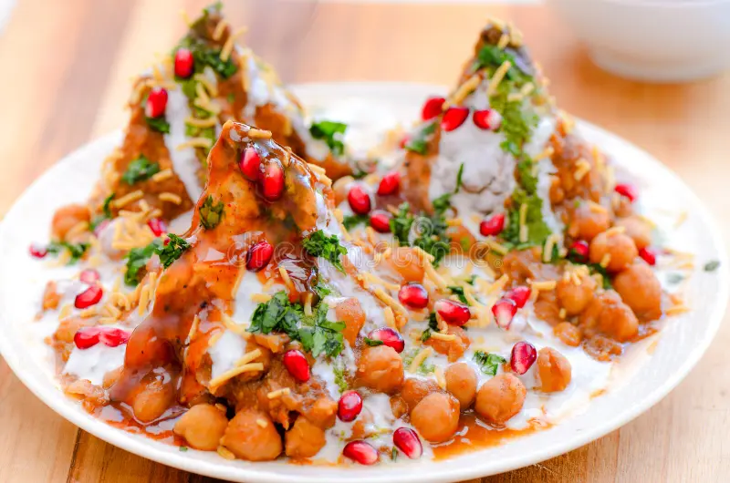
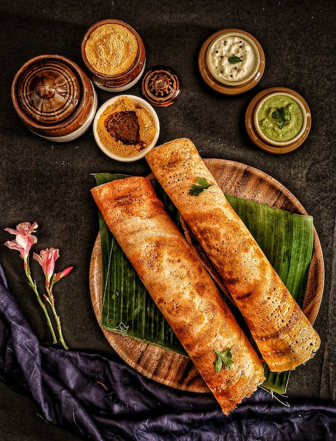
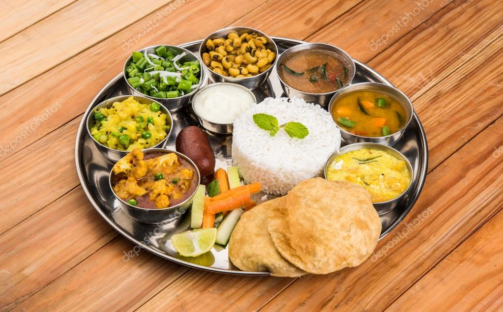
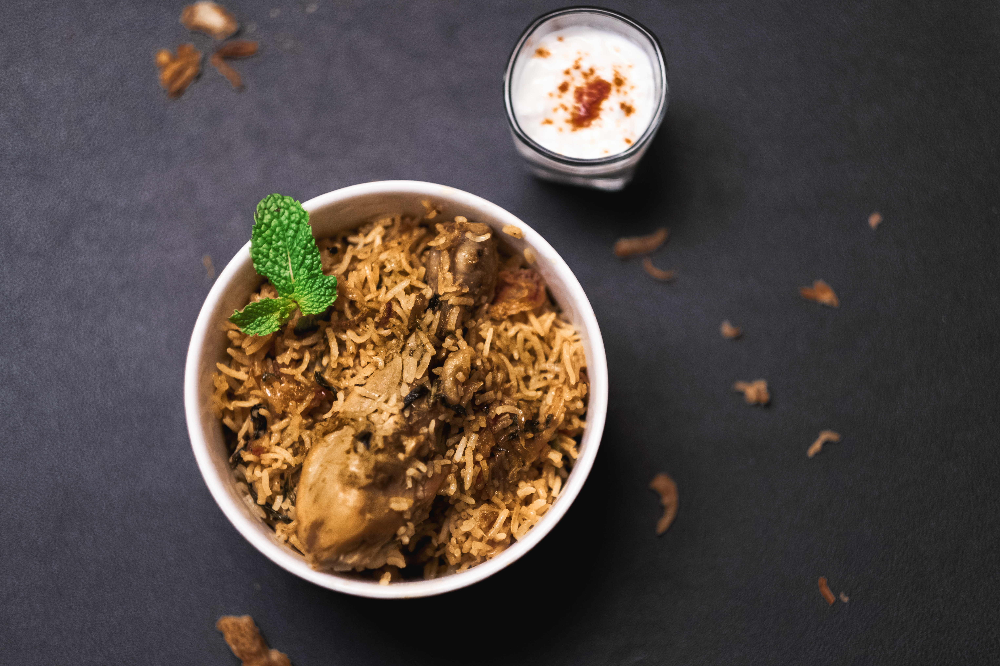
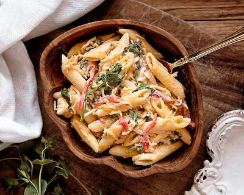
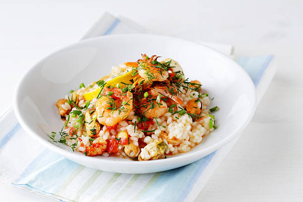
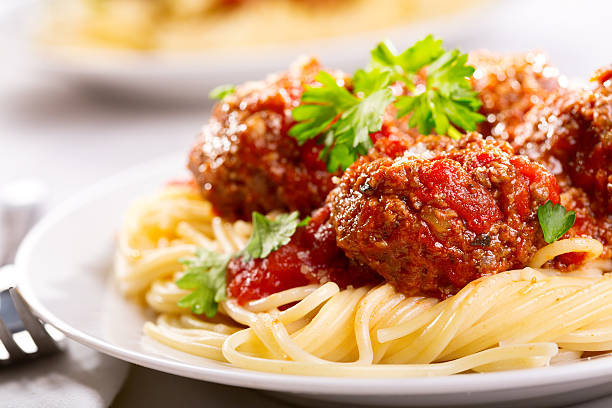

INDIAN
chaats
Chaat, or chāt is a family of savoury snacks that originated in India, typically served as an hors d'oeuvre or at roadside tracks from stalls or food carts acrossSouth Asia in India, Pakistan,Pakistan, Nepal and Bangladesh .
Dasa
A dosa, also called dosai, is a thin pancake in South Indian cuisine made from a fermented batter of ground black lentils and rice. Dosas are popular in South Asia as well as around the world. Dosas are served hot, often with chutney and sambar.
Thali
Thali (meaning "plate") or Bhojanam (meaning "full meal") is a round platter used to serve food in South Asia, Southeast Asia and the Caribbean. Thali is also used to refer to an Indian-style meal made up of a selection of various dishes which are served on a platter.
biryani
Chaat, or chāt is a family of savoury snacks that originated in India, typically served as an hors d'oeuvre or at roadside tracks from stalls or food carts acrossSouth Asia in India, Pakistan,Pakistan, Nepal and Bangladesh .
CHINESE
Fried Rice

Fried rice is a dish of cooked rice that has been stir-fried in a wok or a frying pan and is usually mixed with other ingredients such as eggs , vegetables, seafood, or meat . It is often eaten by itself or as an accompaniment to another dish.
chow mein

Chinese dish made from stir-fried noodles with vegetables and sometimes meat or tofu.
Chinese Hamburger

Chinese Hamburger, Rou Jia Mo (肉夹馍) means “meat in a bun” which sort of makes it similar to what we'd think of as a hamburger, or maybe a Chinese sloppy joe. So there's the meat filling of shredded pork belly with spices and fresh herbs sandwiched between a homemade pan baked bun
Kung Pao Chicken

Kung pao chicken is Chinese-style stir-fried chicken cubes with dried chill peppers peppers. It's a Sichuanese staple that was brought over to America and reinvented for local flavors and tastes. The Sichuanese version is a tad more complex, seasoned with Chinese peppercorns and a large heap of dried chili peppers.
ITALY
pasta
Italian pasta (pronounced “PAS-tah”) is a collective name for a category of food made from wheat flour and water, sometimes with egg. The name refers to the resulting dough (pasta also means “dough”)that is rolled out and cut into various shapes. Pasta is cooked in water and served with a sauce.
Risotto
Risotto (/rɪˈzɒtoʊ/, Italian: [riˈzɔtto, -ˈsɔt-], from riso meaning "rice") is a Italian rice dish cooked with broth until it reaches a creamy consistency. The broth can be derived from meat, fish, or vegetables. Many types of risotto contain butter, onion, white wine, and Parmigiano-Reggiano.
Crab Fettuccine Alfredo

Fettuccine Alfredo (Italian pronunciation: [fettut'tʃiːne alˈfreːdo]) or fettuccine al burro ("fettuccine with butter") is an Italian pasta dish of fresh fettuccine tossed with butter and parmesan (Italian: pasta al burro e parmigiano).
Linguine
Linguine sometimes mispronounced outside linguin is a type of pasta similar to fettuccine and trenette but elliptical in section rather than flat. It is about 4 millimetres is wider than spaghetti but in width not as wide as fettuccine.